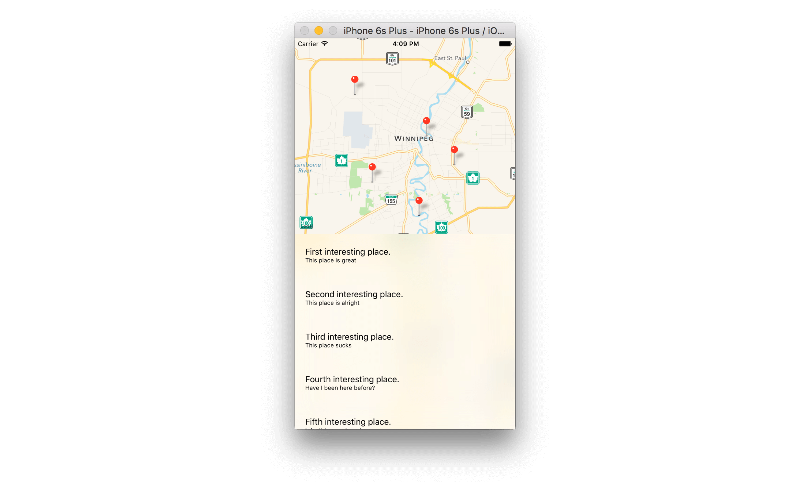

Code Challenge!
Jeffrey's presentation covered how to manage your view controller to display a MK Map View and a Table View, we have also seen how to make them interact through the delegation and datasourcing methods.
In this code challenge, you will resolve the issue our first user has met in InterestingPoint Project: he sent us the following email:
Dear Winnipeg iOS Developer, I downloaded, installed and tried your new application one week ago. I was quite busy these days and gave it a real try only yesterday. But while running the application, unfortunately, I can't even see my own location on the map and that make it painful when I want to reach one of your point of interest... that would be awesome if you could fix it! Please find enclosed the screenshot from my device:

Try to understand what's happened to this user and solve this issue by being sure that no more user will report it in the future.
Download the source code of the project here
Hints
We reported our issue on Stack Overflow and got some quick answers:
- Answer 1:
Did you guys forgot to use the
requestWhenInUseAuthorization()of yourCLLocationManagerinstance? Apple require to inform the user about every features of their device your want to use. Also, do not forget to add the corresponding key/value to yourInfo.plistfile...
- Answer 2:
Hey there! Did you ask the user wether he accepted or refused or allowed your application using its GPS? If he refused, the application won't be able to display its location. I did a similar work few months ago and I used a protocol method of the
CLLocationManagerto check the state the authorization state...
Hoping it will help you to find a solution, Good luck!